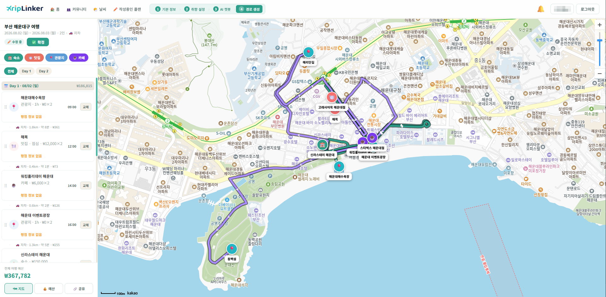

TripLinker
사용자 취향 분석 기반 맞춤형 여행 경로 추천 & 실시간 지도 공유 웹 플랫폼

1. 프로젝트 개요
개요
기존 여행 서비스는 단순한 장소 추천 수준에 그쳐 실제 이동 동선에 맞는 구체적인 예상 경비를 산출해주지 못했습니다.
또한 단일 AI 모델의 가짜 장소 추천 오류 문제와 여행을 계획할 때마다 매번 취향을 새로 입력해야 하는 불편함을 해결하고자,
카카오 지도 API 연동, 예상 경비 자동 산출, 경로 생성·대화형 지도 시각화·취향 연속성 구조를 갖춘 TripLinker를 기획하고 개발했습니다.
비회원 (Guest)
큐레이션 및 인기 추천 경로 열람 가능
(스크랩 및 AI 플래너 이용은 로그인 필요)
일반 회원 (Member)
AI 맞춤 여행 경로 생성, 지도 동선 편집,
이메일 인증, 공유 링크 발행 전 기능 이용
관리자 (Admin)
시즌/테마별 큐레이션 경로 등록, 신고 처리 및 서비스 통계 관리 권한 보유
2. 프로젝트 분석 및 기획
TripLinker 서비스의 요구사항 및 기능 명서를 분석하고, 일정(WBS)과 역할 분담을 체계적으로 수립했습니다.
- 요구사항 수립: JWT/OAuth2 보안 정책, AI 경로 생성 및 예산 유효성 검증, 공유 권한(READ/WRITE) 정의
- 주요 기능 명세: AI 대화형 챗봇, Kakao Map 동선 시각화, 카카오톡 공유 및 지출 리포트
3. 시스템 설계
Groq 초속 초안 생성과 Claude 검증을 결합한 2단계 AI 파이프라인 및 계층형 백엔드 아키텍처를 설계했습니다.
- 데이터베이스 설계: 회원, AI 챗봇 대화, 여행 플랜, 장소, 커뮤니티, 예산/가계부 등 9개 도메인 간의 데이터 구조 및 연관 관계 설계
- API 및 아키텍처 설계: 3계층 구조로 역할을 분리하고, 프론트엔드가 데이터를 일관되게 받을 수 있도록 공통 API 응답 규격 설계
- 보안 및 권한 제어: JWT 토큰 기반 인증, 비밀번호 암호화 저장, URL 접근 권한 분기(일반 유저/관리자) 처리 구조 설계
4. 개발 및 트러블슈팅
개발 진행 과정에서 직면한 주요 기술적 이슈와 해결 과정입니다.
1. AI 경로 생성 시 단일 LLM 환각(Hallucination) 현상
• 문제 상황: 단일 LLM 사용 시 존재하지 않는 장소를 추천하거나 조건에 맞지 않는 경로를 생성하는 현상 발생.
• 원인 분석: 단일 프롬프트에 장소 추천, 동선 구성, 예산 검증 조건이 동시에 부여되어 모델 정확도 저하.
• 해결 방법: Groq(1차 생성) → Claude(검증 및 교정) 2단계 파이프라인 구축 및 장애 시 Gemini 폴백을 적용해 추천 정확도 및 안정성 확보.
2. 이메일 인증 번호 중복 발송 및 보안 문제
• 문제 상황: 인증 메일 재발송 시 이전 발송된 인증 번호가 그대로 유효하여 보안 취약점 노출.
• 원인 분석: 기존 발급된 인증 토큰의 만료 상태가 처리되지 않고 DB에 중복 쌓이는 현상.
• 해결 방법: 신규 번호 발송 시 이전 인증 건을 즉시 만료 처리하고, 5분 유효시간 세션을 적용해 보안 강화.
3. 지도 공유 링크 접속 시 권한 제어 오류
• 문제 상황: 공유 링크로 접속한 비회원 사용자가 지도 상의 마커나 일정을 수정할 수 있는 문제 발생.
• 원인 분석: 지도 화면 렌더링 시 소유자(Owner)와 조회자(Viewer) 간 접근 권한 분기 로직 부재.
• 해결 방법: 공유 토큰 검증 시 READ_ONLY 권한을 부여하고, 비회원 접속 시 마커 편집 UI를 비활성화하는 읽기 전용 모드 적용.
담당 역할
- Spring Security & BCrypt 암호화 및 실시간 중복 체크 API 구현
- JavaMailSender 연동 이메일 인증 번호 발송 및 5분 만료 세션 관리
- Groq(생성) + Claude(검증) Multi-LLM 파이프라인 구축
- Spring AI 기반 Gemini Fallback 연동 및 Structured JSON DTO 파싱
- AI 생성 경로 데이터 기반 지도 마커 및 일자별 동선 렌더링
- 마커 클릭 시 장소 상세 정보 팝업 및 인터랙티브 UI 구현
- 고유 UUID 공유 토큰 생성 및 링크 발급 기능 개발
- 비회원 사용자를 위한 READ_ONLY 읽기 전용 접근 제어 구현